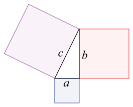

Sorry! Your
browser is unable to load this Impress presentation. Please update
your browser.
/Users/Naomi/localmh/MathHub/MiKoMH/pythagoreantheorem/export/planetary/narration/notes/frontmatter.html
/Users/Naomi/localmh/MathHub/MiKoMH/pythagoreantheorem/export/planetary/narration/main/acknowledgements.html
/Users/Naomi/localmh/MathHub/MiKoMH/pythagoreantheorem/export/planetary/narration/main/begin.html
/Users/Naomi/localmh/MathHub/MiKoMH/pythagoreantheorem/export/planetary/narration/measurements/measurement.html
/Users/Naomi/localmh/MathHub/MiKoMH/pythagoreantheorem/export/planetary/narration/measurements/length.html
/Users/Naomi/localmh/MathHub/MiKoMH/pythagoreantheorem/export/planetary/narration/measurements/area.html
/Users/Naomi/localmh/MathHub/MiKoMH/pythagoreantheorem/export/planetary/narration/measurements/angle.html
/Users/Naomi/localmh/MathHub/MiKoMH/pythagoreantheorem/export/planetary/narration/measurements/right_angle.html
- basic measurements
- •
right angle is an angle with 90 degrees.

/Users/Naomi/localmh/MathHub/MiKoMH/pythagoreantheorem/export/planetary/narration/measurements/area.html
/Users/Naomi/localmh/MathHub/MiKoMH/pythagoreantheorem/export/planetary/narration/pythagoreantheorem/pythagoras.html
/Users/Naomi/localmh/MathHub/MiKoMH/pythagoreantheorem/export/planetary/narration/pythagoreantheorem/theorem.html
/Users/Naomi/localmh/MathHub/MiKoMH/pythagoreantheorem/export/planetary/narration/measurements/area.html
/Users/Naomi/localmh/MathHub/MiKoMH/pythagoreantheorem/export/planetary/narration/measurements/angle.html
/Users/Naomi/localmh/MathHub/MiKoMH/pythagoreantheorem/export/planetary/narration/notes/backmatter.html